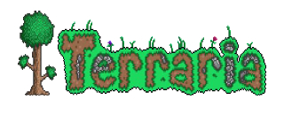

Project Zomboid


Stardew Valley

Terraria, Re-Logic tarafından geliştirilen efsanevi bir 2D sandbox macera oyunudur. PC platformunda oynanabilen bu yapım, sınırsız madencilik, crafting ve keşif olanakları sunar. Oyuncular yer altı zenginliklerini kazarak, devasa yapılar inşa ederek ve güçlü boss'larla savaşarak kendi maceralarını yaratırlar. Her dünya rastgele oluşturulur ve yüzlerce farklı eşya, silah ve zırh ile oynanış stilinizi tamamen özelleştirebilirsiniz. Renkli piksel grafikleri ve derin oyun mekanikleriyle Terraria, hem yaratıcılığı hem de aksiyonu bir araya getirir. Eğer keşif, inşaat ve macera dolu bir PC oyunu arıyorsanız, Terraria sınırsız saatler boyu eğlence sunar. BallasNet üzerinden oyunu inceleyebilir ve benzer sandbox macera oyunlarını keşfedebilirsiniz.
Terraria, keşif, macera, inşa ve aksiyon mekaniklerini bir araya getiren popüler bir sandbox oyunudur. Re-Logic tarafından geliştirilen oyun, oyunculara birbirinden farklı biyomlarla dolu geniş bir dünyayı keşfetme, kaynak toplama, maden kazma, yapılar inşa etme ve çeşitli düşmanlarla mücadele etme özgürlüğü sunar.
2D piksel grafiklerine sahip olmasına rağmen oldukça kapsamlı bir oyun dünyası barındıran Terraria’da her oyuncunun ilerleyişi farklı olabilir. Yeni eşyalar üretmek, güçlü ekipmanlar elde etmek, boss savaşlarına hazırlanmak veya tamamen kendi yapılarınızı oluşturmak oyunun temel deneyimini oluşturur. Bu nedenle Terraria, hem kısa süreli maceralar hem de uzun soluklu oyun deneyimleri arayan oyunculara hitap eder.
Dosyaları "LİNK 1", "LİNK 2" veya "LİNK 3" üzerinden indirdikten sonra zip dosyasını ayıklayıp çalıştırmanız yeterlidir. Kurulum için ek bir yazılım indirmenize gerek yoktur.
Oyun zaten Türkçe olarak gelmektedir. Oyunu açtıktan sonra dilediğiniz kadar Türkçe oynayabilirsiniz.
Terraria, yüksek donanım gereksinimleri olmayan ve düşük sistemlerde de sorunsuz çalışabilen bir oyundur. Ancak oyunun performansı bilgisayarınızın işlemcisi, RAM miktarı ve grafik birimine göre değişiklik gösterebilir. Özellikle çok sayıda yapı, eşya ve karakterin aynı anda bulunduğu bölümlerde daha güçlü bir sistem, daha akıcı bir deneyim sağlar. Oyunu oynamak için güçlü bir bilgisayara sahip olmanız kesinlikle gerekmez.
İndireceğiniz dosyaların hepsi önceden denenmiş, oynanmış ve virüs tarama testlerinden geçmiş dosyalardır. Dosyaların BallasNet üzerinden indirilmesi, bilgisayarınızın güvenliği açısından önemlidir. Ayrıca indirme sırasında ek yazılım veya zararlı yazılım dosyaları bulunmamaktadır.
Terraria, sunduğu özgür oynanış yapısı sayesinde her oyuncuya farklı bir macera yaşatabilen oyunlardan biridir. İster saatlerinizi maden kazıp yeni eşyalar üretmeye ayırın, ister büyük yapılar inşa edin ya da güçlü boss’larla mücadele edin; oyunda ilerlemenin tek bir yolu yoktur. Keşif ve yaratıcılığı aksiyonla birleştiren yapısıyla Terraria, PC’de uzun süre oynanabilecek eğlenceli sandbox oyunları arasında yer almaktadır.